Changing execution levels (target mode)
- When a processor takes an exception (e.g., interrupt or system call):
- Save the current processor state in SPSR
- Save the return address to ELR

Taesoo Kim
Taesoo Kim
What happens when the processor doesn’t know how to handle the exception?
Are Synchronous Interrupts possible, or are they all asynchronous?
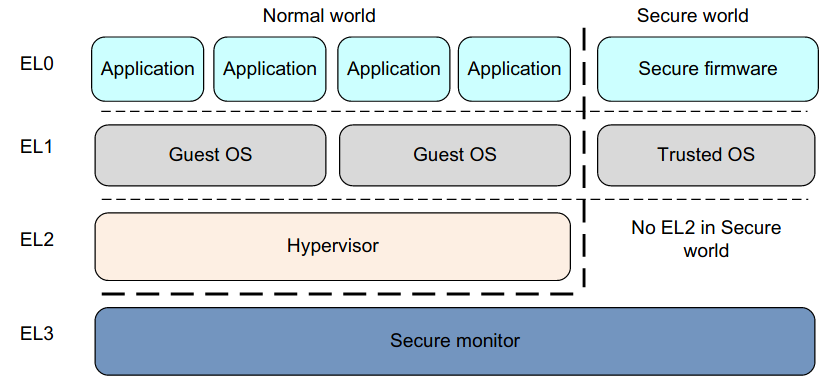
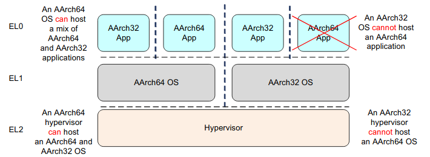
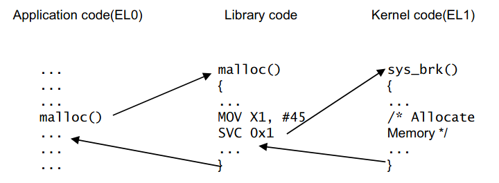
svc (system call), data abort (access violation), etc.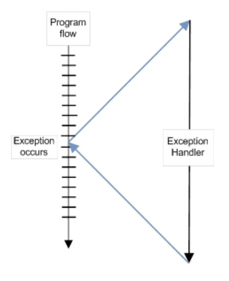
svc), hypervisor call (hvc)-> Interrupt in x86: a control transfer mechanism
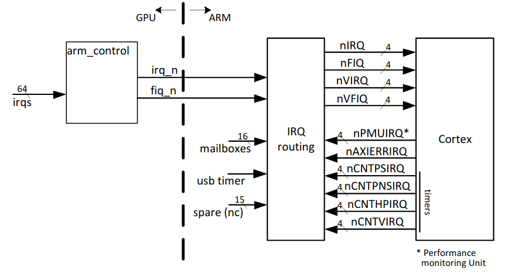
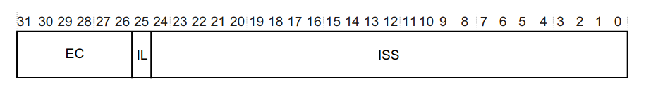
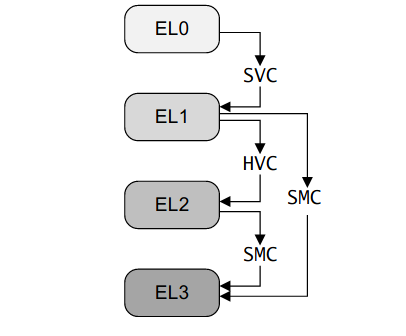
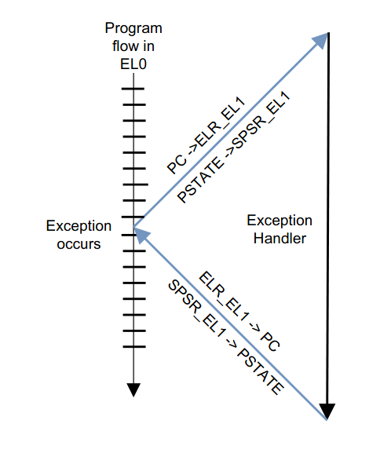
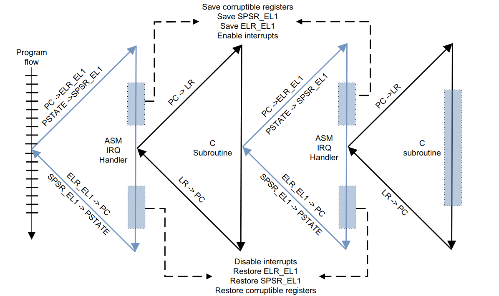
eret (lowering the exception level):
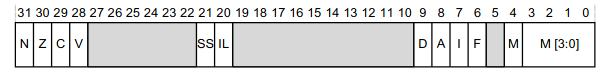

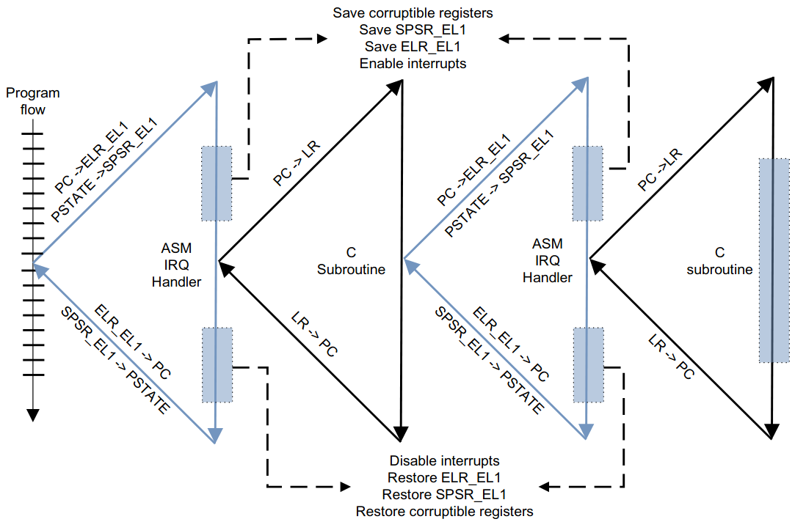
#[no_mangle]
pub extern "C" fn handle_exception( ... ) {
match info.kind {
Kind::Synchronous => {
let syndrome = Syndrome::from(esr);
match syndrome {
Syndrome::Brk(_) => { ... }
Syndrome::Svc(n) => { ... }
}
Kind::Irq => {
let ic = Controller::new();
for v in Interrupt::iter() {
if ic.is_pending(v) {
crate::IRQ.invoke(v, tf);
}
}
}
...
}